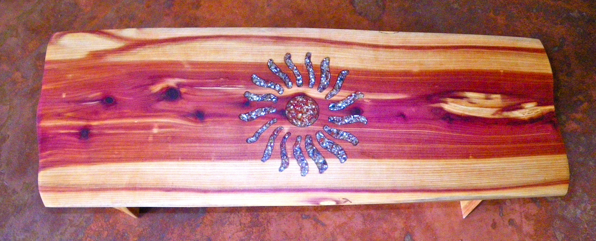
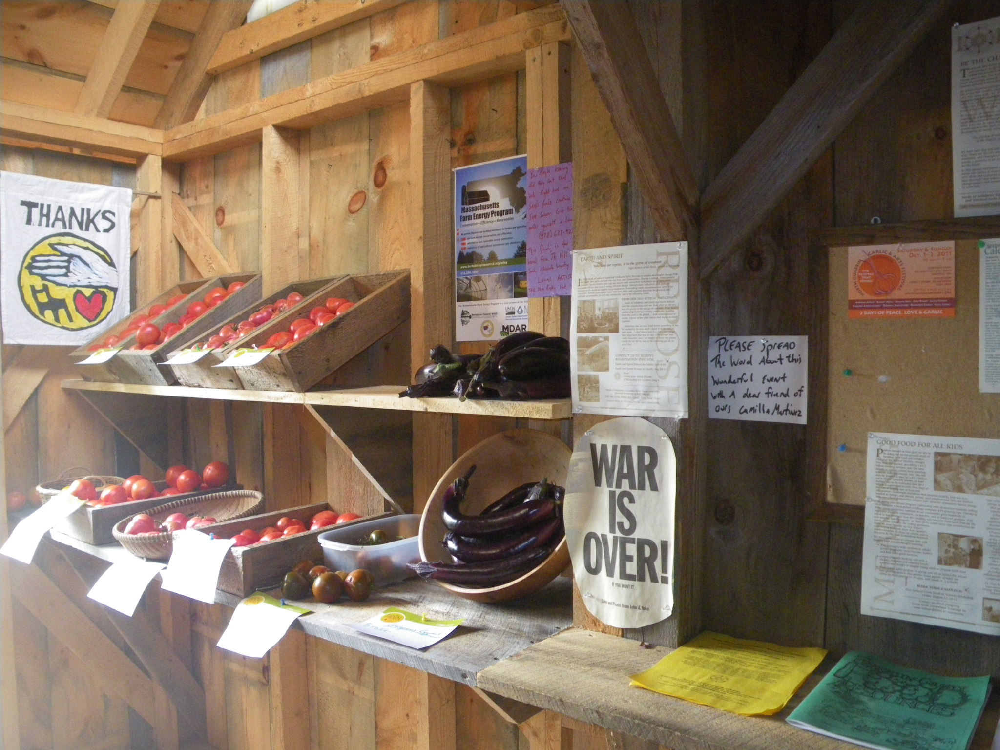

Seeds of Solidarity
Grow Food Everywhere
Solidarity Handworks Farmstand

Solidarity Handworks is both food from the land, and beautiful art crafted from the local forest.

The Farmstand: Our sweet farmstand is located at our site, 165 Chestnut Hill Road, Orange. We are famous for our delicious salads and greens, grown in fertile soil in our solar greenhouses and available March through November. The farmstand is self-serve and our cooler is powered by a solar electric system. Heirloom and gorgeous vegetables fill the shelves at the height of the season. We sell most of our garlic at the North Quabbin Garlic and Arts Festival but any left will go in our farmstand in October for your planting and eating pleasure.

The Art: As both farmer and artist, Ricky creates beautiful, sacred rustic pieces for custom order. Pieces are made from local red cedar, harvested with love, then crafted by hand into meditation benches, altars, tables, and coat racks, with beautiful inlays of blue corn and red pepper- looks like precious stone! All done with love, in a solar powered studio on our farm.
The phone number for the farm, and Solidarity Handworks if you wish to talk about and place an order is 978-544-7564. Ask forRicky, and feel free to leave a message.Your purchases support our livelihood as a family working with the land.

At the farmstand, there is always some interesting reading about upcoming events, or Ricky’s “cooler blog,” his notes on life, food, farming, and community left for visitors on the cooler door, such as this excerpt:
Tuesday Aug 29: We survived the hurricane of 2011. Many farms did not fare well. When I was looking for my first farm 25 years ago the place to look for was river-bottom land. Now river-bottom land gets 100-year floods,three years in a row! Things have changed and we must adapt. Farming up in the hills, cities, suburbs–making soil is the future. May all neighborhoods everywhere come together to create resilient and healthy communities.
In solidarity, Ricky